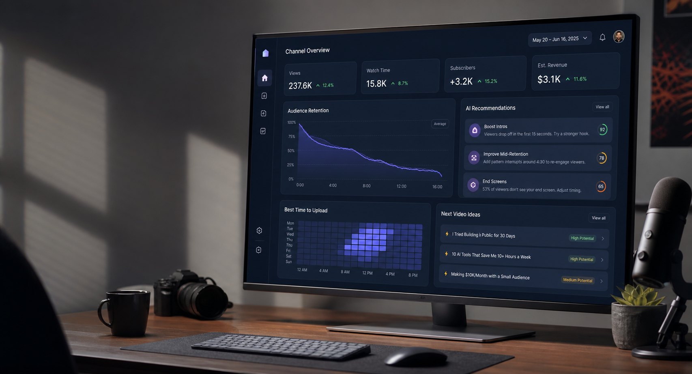

Channel link
Connect YouTube once and bring views, watch time, subscribers, uploads, and channel history into one clear workspace.

AI insight studio for YouTube creators
Link your YouTube channel, let ViewCast read the signals behind your uploads, and get clear AI recommendations for what to make, when to publish, and how to grow.
Insights
ViewCast turns YouTube analytics into creator-friendly AI guidance, so every upload decision starts with real audience data instead of guesswork.
Connect YouTube once and bring views, watch time, subscribers, uploads, and channel history into one clear workspace.
Spot retention drop-offs, topic patterns, format strengths, search signals, and audience behavior that deserve attention.
Get practical recommendations for your next video idea, upload timing, title angle, Shorts strategy, and improvement list.
Dashboard
Move between the core views creators expect: a channel overview, video-level analysis, and AI strategy that explains the next best move.
See verified channel momentum, discovery sources, watch time, and the AI signals that shape your next upload plan.
Workflow
Early access
Tell us what kind of creator you are and we will shape ViewCast around the insights you need before your next upload.